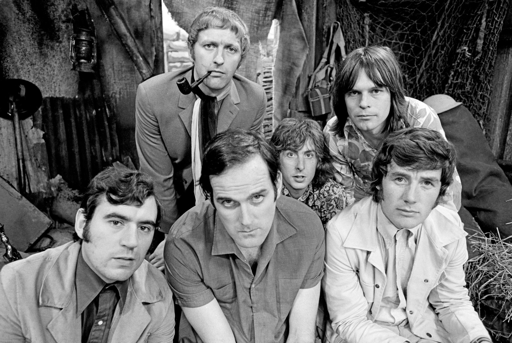

영국을 대표하는 전설적인 코미디 그룹. 대표작은 몬티 파이선의 날아다니는 서커스이며, 1969년부터 1974년까지 총 45편이 방영되었다. 당시 찾아보기 힘들었던 부조리 코미디를 중심으로 하지만 몸개그(슬랩스틱), 말장난, 저질개그 등도 사리지 않고 그야말로 온갖 종류의 개그를 섭렵했기 때문에 문화적 차이를 넘어서 웃으며 볼 수 있다. 잔인하거나 난잡한 개그도 서슴지 않아 사우스 파크 분위기를 내기도 한다.그런 데다가 40여 년이 지난 오늘날에 봐도 웃기다는 점 또한 굉장하다. 그야말로 시공을 초월한 개그.
이들의 엄청난 인기와 성공으로 쇼, 영화, 음반, 책 등으로까지 각종 미디어로 영향력이 커져나갔다. 이 그룹이 영미권 코미디에 끼친 어마어마한 영향은 비틀즈가 음악에 미친 영향과 비유되고 있다. 대표적으로 이들을 부르는 호칭이 바로 코미디의 비틀즈다. 현재까지도 이들의 전성기 시절 활동은 영국뿐 아니라 영미권 전반에 걸쳐 레전드 오브 레전드로 인정받고 있으며 특히 스케치 코미디쇼나 풍자개그, 콩트 부분에 있어선 일대 혁명수준으로 평가받고 있다.